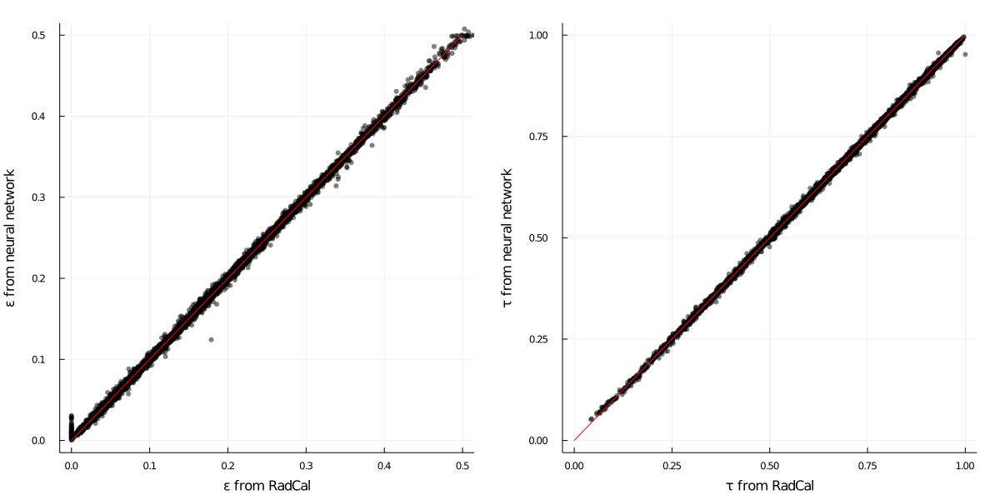

RadCalNet
Radiation properties machine learning model trained on RadCal.
In this project we use the re-implementation of RadCal (Grosshandler1993)[4] to generate data and train a machine learning model for the prediction of radiative properties, i.e. emissivity and transmissivity, of common combustion flue gases.
This is done because for real-time calls of RADCAL might be computationally prohibitive, for instance in CFD applications. Thus, a neural network is trained with Flux based on the simulated data and this module provides an interface to call the network from external programs (Ansys Fluent, OpenFOAM, ...).
For details of validity ranges and sample space, please check function RadCalNet.datasampler!, where random sampling is provided. Indexing of species array is documented at RadCalNet.runradcalinput.
Below we display the quality of fitting of model. One must notice that fitting of emissivity still needs a few adjustments, while transmissivity is well predicted over the whole range.

Usage
The following snippet illustrates everything the model was designed to do.
julia> using RadCalNet;
julia> x = Float32[1200.0; 1000.0; 2.0; 1.0; 0.1; 0.2; 0.1];
julia> y = RadCalNet.model(x)
2-element Vector{Float32}:
0.3231391
0.6287435The array of inputs x is defined below, and y provides gas emissitivy and transmissivity, respectively. Notice that x must be a column vector with entries of type Float32.
| Index | Quantity | Units | Minimum | Maximum |
|---|---|---|---|---|
| 1 | Wall temperature | K | 300 | 2500 |
| 2 | Gas temperature | K | 300 | 2500 |
| 3 | Depth | m | 0.1 | 3.0 |
| 4 | Pressure | atm | 0.5 | 1.5 |
| 5 | CO2 mole fraction | - | 0.0 | 0.25 |
| 6 | H2O mole fraction | - | 0.0 | 0.30 |
| 7 | CO mole fraction | - | 0.0 | 0.20 |
For practical applications, one generally is interested in calling the model with a large inputs set. Belowe we illustrate how to do this with a block of data and verify the predictions are within the model tolerance on average.
using WallyToolbox
using RadCalNet
using Flux: mae
# Loss after last training.
LOSS = 0.0022
# Random sample data randomly extracted (20 rows).
TESTDATA = Float32[
1670.0 960.0 1.9 0.5 0.15 0.18 0.03 0.161774 0.820025
1230.0 320.0 1.9 1.0 0.04 0.08 0.18 0.20205 0.79694
1760.0 770.0 2.1 1.5 0.22 0.24 0.12 0.309017 0.669564
1770.0 960.0 1.9 0.5 0.15 0.0 0.13 0.0721235 0.919333
350.0 1590.0 1.9 1.0 0.06 0.29 0.12 0.357215 0.169437
2330.0 1820.0 1.1 1.5 0.13 0.08 0.13 0.100282 0.840802
1220.0 2070.0 0.2 0.5 0.11 0.17 0.09 0.0361672 0.902581
760.0 1380.0 1.9 1.5 0.1 0.01 0.10 0.188531 0.69798
1870.0 1880.0 0.2 1.5 0.14 0.28 0.17 0.0819803 0.858508
1910.0 2220.0 1.3 1.5 0.2 0.3 0.09 0.202592 0.63856
2290.0 360.0 1.8 0.5 0.0 0.23 0.07 0.0755366 0.914045
1330.0 640.0 1.7 1.5 0.21 0.04 0.06 0.227428 0.764363
1090.0 1260.0 1.9 1.5 0.17 0.18 0.18 0.381407 0.501751
1250.0 1590.0 0.4 1.5 0.13 0.27 0.18 0.191725 0.688272
990.0 2320.0 0.5 1.0 0.23 0.27 0.03 0.118285 0.633932
1920.0 720.0 0.3 1.0 0.05 0.03 0.18 0.0496579 0.945693
1250.0 310.0 0.6 1.0 0.04 0.18 0.15 0.171857 0.827273
1990.0 1020.0 1.3 1.0 0.09 0.11 0.15 0.140596 0.837042
1180.0 1830.0 0.3 0.5 0.09 0.29 0.02 0.0682171 0.851304
2120.0 1230.0 2.9 1.5 0.03 0.06 0.17 0.168034 0.791942
]
# Predictors and targets transposed.
X = transpose(TESTDATA[:, 1:7])
Y = transpose(TESTDATA[:, 8:9])
mae(RadCalNet.model(X), Y) <= LOSS
# output
trueThe following test can also be seen as a tutorial for data generation, where we make the verification of data generation with provided seed. See RadCalNet.createcustomdatabase for more details. An alternative RadCalNet.datasampler! can be provided for specific problems.
import Random
using WallyToolbox
using RadCalNet
function sampledatabase()
#XXX: documentation is run from root directory!
testname = joinpath(joinpath(@__DIR__, "src/RadCalNet/data/sample.dat"))
# Provide a seed at start-up for *maybe* reproducible builds.
Random.seed!(42)
if !isfile(testname)
RadCalNet.createcustomdatabase(;
sampler! = RadCalNet.datasampler!,
repeats = 3,
samplesize = 3,
cleanup = true,
saveas = testname,
override = true
)
end
return RadCalNet.loaddatabase(testname)
end
A = sampledatabase()[:, end-5:end]
# output
9×6 Matrix{Float32}:
0.61 0.0006522 0.00680899 0.127997 1.4369f5 0.784483
0.63 0.00147905 0.0163017 0.256072 52761.9 0.493376
0.8 0.00181013 0.0525569 0.209679 1712.82 0.743175
0.69 0.000962085 0.0317917 0.0917254 3.80101f5 0.88582
0.69 0.00246231 0.0538234 0.418247 1442.63 0.479691
0.68 0.00210072 0.00470752 0.0997078 71325.7 0.79875
0.67 0.000770321 0.0101432 0.0812446 3.0696f5 0.815462
0.7 0.00154008 0.0215186 0.253691 24945.7 0.478712
0.53 0.00133843 0.0180676 0.234852 21784.6 0.7443To-do's
- Broaden sample space over the whole RadCal composition spectrum.
- Define data loading on GPU/CPU though a flag when recovering model.
- Create database for testing outside of sampling points.
- Improve model reload and organize a notebook for training.
Literature discussion
Verification agains Gorog's paper
Below we compare computed values with those by (Gorog1981a)[5]. Reference paper is found here.
At least qualitative agreement is found and orders of magnitude are right. On the other hand, using directly the model parameters from (Tam2019)[6] do not produce the expected results (not displayed, work in progress in this draft). It is not clear how the data is pre- and post-processed for use with their network.
All interfaces
RadCalNet.ModelData — TypeModelData(fpath::String; f_train::Float64 = 0.7)Load HDF5 database stored under fpath and performs standardized workflow of data preparation for model training. The data is split under training and testing datasets with a fraction of training data of f_train.
scaler::StatsBase.ZScoreTransform{Float32, Vector{Float32}}: Scaler used for data transformation.X_train::Matrix{Float32}: Matrix of training input data.Y_train::Matrix{Float32}: Matrix of training output data.X_tests::Matrix{Float32}: Matrix of testing input data.Y_tests::Matrix{Float32}: Matrix of testing output data.n_inputs::Int64: Number of model inputs.n_outputs::Int64: Number of model outputs.
RadCalNet.ModelTrainer — TypeModelTrainer(
data::ModelData,
model::Chain;
batch::Int64=64,
epochs::Int64=100,
η::Float64=0.001,
β::Tuple{Float64,Float64}=(0.9, 0.999),
ϵ::Float64=1.0e-08
)Holds standardized model training parameters and data.
batch::Int64: Batch size in training loop.epochs::Int64: Number of epochs to train each time.data::RadCalNet.ModelData: Database structure used for training/testing.model::Flux.Chain: Multi-layer perceptron used for modeling.optim::NamedTuple: Internal Adam optimizer.losses::Vector{Float32}: History of losses.
RadCalNet.createcustomdatabase — Methodcreatecustomdatabase(;
sampler!::Function,
repeats::Int64 = 100,
samplesize::Int64 = 50_000,
cleanup::Bool = false,
saveas::String = "database.h5",
OMMIN::Float64 = 50.0,
OMMAX::Float64 = 10000.0,
override::Bool = false
)Creates a custom database by generating a number repeats of samples of samplesize rows. Inputs for runradcalinput are to be generated by a sampler! user-defined function which modifies in place an array of compositions, and returns T, L, P, FV, TWALL for setting up a simulation. Files are temporarilly stored under data/ with a sequential numbered naming during database creation and aggregated in a HDF5 file named after saveas. The choice to aggregate files after an initial dump is because generation can be interrupted and manually recovered in an easier way and avoiding any risk of data losses - database creation can take a very long time. If cleanup is true, all intermediate files are removed.
RadCalNet.datasampler! — Methoddatasampler!(X::Vector{Float64})::TupleCustom sample space to generate entries with createcustomdatabase. This function contains the parameter space used for model training.
RadCalNet.defaultmodel — Methoddefaultmodel()Build model structure with which RadCalNet is trained.
RadCalNet.dumpscaler — Methoddumpscaler(scaler::ZScoreTransform{Float32,V32}, saveas::String)Write z-score scaler mean and scale to provided saveas YAML file.
RadCalNet.getradcalnet — Methodgetradcalnet(;
scale = true,
fscaler = nothing,
fmstate = nothing
)Load trained model and scaler to compose RadCalNet. If testing new models, it might be useful to use fscaler and fmstate to point to specific versions of scaler and model state files.
RadCalNet.loaddatabase — Methodloaddatabase(fname::String)Retrieve database from HDF5 file and access table as a matrix.
RadCalNet.loadscaler — Methodloadscaler(fname::String)::FunctionLoad z-scaler in functional format from YAML fname file.
RadCalNet.makemodel — Methodmakemodel(layers::Vector{Tuple{Int64, Any}}; bn = false)::ChainCreate a multi-layer perceptron for learning radiative properties with the provided layers. If bn is true, then batch normalization after each layer. The final layer has by default a sigmoid function to ensure physical outputs in range [0, 1].
RadCalNet.model — Functionmodel(x::Vector{Float32})::Vector{Float32}Main model interface for emissivity and transmissivity.
RadCalNet.plottests — Methodplottests(trainer::ModelTrainer; num::Int64)Evaluate model over num data points and compare the data to the expected values as computed from RadCal. Makes use of test data only - never seem by the model during training.
RadCalNet.runradcalinput — Methodrunradcalinput(;
X::Dict{String, Float64} = Dict{String, Float64}(),
T::Float64 = 300.0,
L::Float64 = 1.0,
P::Float64 = 1.0,
FV::Float64 = 0.0,
OMMIN::Float64 = 50.0,
OMMAX::Float64 = 10000.0,
TWALL::Float64 = 500.0,
radcalexe::String = "radcal_win_64.exe"
)::Vector{Float64}Create RADCAL.IN from template file and dump to disk.
NOTE: the user is responsible to provide a vector X of mole fractions of species that sums up to one. If this is not respected RADCAL fails. The Following list provides the indexes of available species in vector X.
| Index | Species | Index | Species | Index | Species |
|---|---|---|---|---|---|
| 1 | CO2 | 6 | C2H6 | 11 | CH3OH |
| 2 | H2O | 7 | C3H6 | 12 | MMA |
| 3 | CO | 8 | C3H8 | 13 | O2 |
| 4 | CH4 | 9 | C7H8 | 14 | N2 |
| 5 | C2H4 | 10 | C7H16 |
RadCalNet.samplecols — MethodGet sample of indexes for data retrieval.
RadCalNet.tests — MethodGet testing data for data loader construction.
RadCalNet.train — MethodGet training data for data loader construction.
RadCalNet.trainonce! — Methodtrainonce!(trainer::ModelTrainer; num = 1_000)Train model and keep track of loss for the number of epochs in trainer using its internal data and parameters. Use num data points.